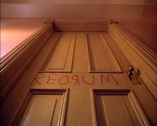

Jack Torrance se convierte en cuidador de invierno en el
Hotel Overlook, en Colorado, con la esperanza de vencer
su bloqueo con la escritura. Se instala allí junto con su
esposa, Wendy, y su hijo, Danny, que está plagado de
premoniciones psíquicas. Mientras la escritura de Jack no
fluye y las visiones de Danny se vuelven más
preocupantes, Jack descubre oscuros secretos del hotel y
comienza a convertirse en un maníaco homicida,
empeñado en aterrorizar a su familia.
A lo largo de la pelicula, se observan
varios espectros o fantasmas tales como el
de las tan reconocidas gemelaas
el fantasma de la mujer en el baño y entre otros